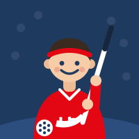

Automatizace
Dostupnost
Přehled o tom, kdo z kolegů je kdy k dispozici – bez dohledávání v e-mailech a kalendářích. [DOPLNIT: co přesně automatizace dělá a kde ji najdete]

ITTomáš Fiala
Starám se o Microsoft 365 a automatizace, aby vám vše fungovalo.
Teams nejde? Napište mi e-mail
Pomoc
Nejde vám něco z tohohle? Nelamte si s tím hlavu a napište mi.
Zapomenuté heslo, zamčený účet, ověření v aplikaci Authenticator nebo nový telefon.
Účet, licence, instalace Office a nastavení na počítači i v mobilu.
Přihlášení, týmy a kanály, schůzky, kamera a mikrofon, přidání kolegů.
Pošta, kalendář, sdílené schránky, podpis e-mailu a pošta v telefonu.
Ukládání a sdílení souborů, synchronizace a obnovení smazaného dokumentu.
Nevíte, komu napsat? Napište mně – buď to vyřeším, nebo vás pošlu na správné místo.
Jak se mi ozvatProjekty
Kromě pomoci s IT stavím automatizace, které šetří čas celému svazu.
Automatizace
Přehled o tom, kdo z kolegů je kdy k dispozici – bez dohledávání v e-mailech a kalendářích. [DOPLNIT: co přesně automatizace dělá a kde ji najdete]
Automatizace
Hladký nástup nových kolegů: účet, licence, Teams a přístupy připravené dřív, než poprvé přijdete do kanceláře. [DOPLNIT: co vše Boarding zajišťuje]
Správa
Účty, licence, skupiny, týmy v Teams, sdílení a zabezpečení. Hlídám, aby vše běželo a data byla v bezpečí. [DOPLNIT]
O mně
Sport mě provází odmalička a florbal je pro mě srdeční záležitost. [DOPLNIT: jak vás florbal chytil, za koho fandíte nebo hrajete]
Na svazu propojuji dva světy – florbal a IT. Baví mě hledat cesty, jak si práci zjednodušit, a pomáhat lidem, aby technika nepřekážela, ale pomáhala. [DOPLNIT]
„Není nikdy pozdě začít s něčím jiným.“
Přesně tak se dívám i na techniku: nikdo nemusí všechno umět hned. Klidně se ptejte, žádná otázka není hloupá. [DOPLNIT]
Kontakt
Nejrychleji mě zastihnete v Teams. Stačí krátká zpráva, co nefunguje.